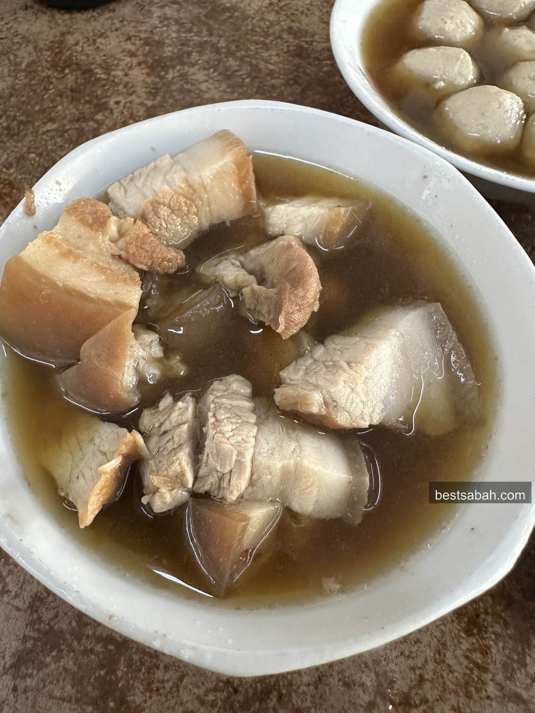
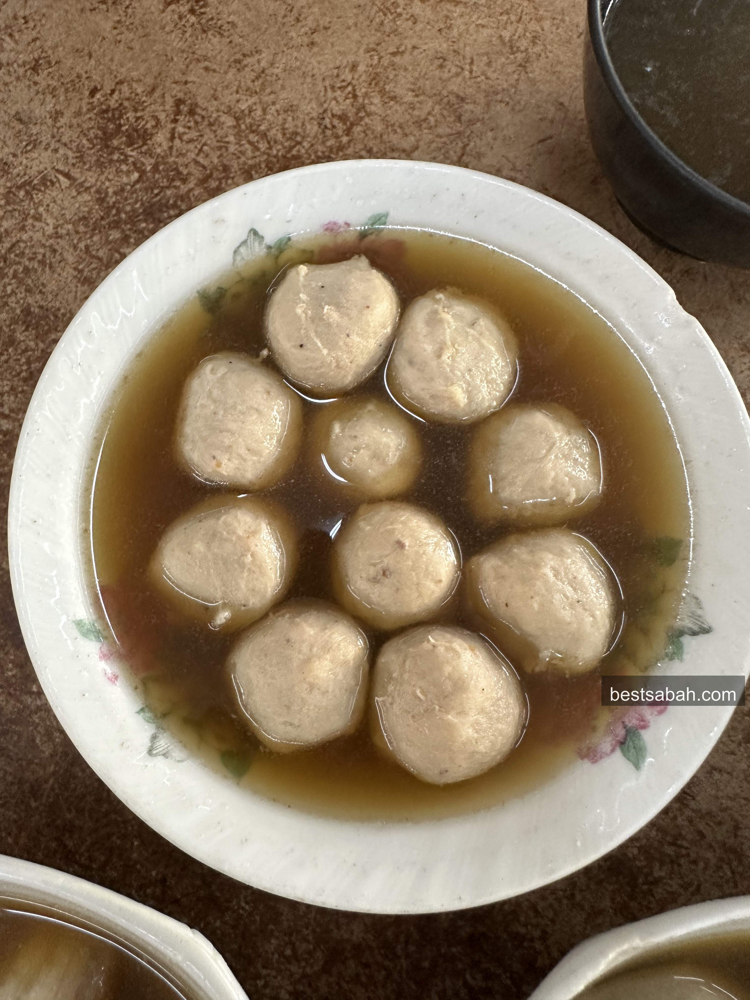
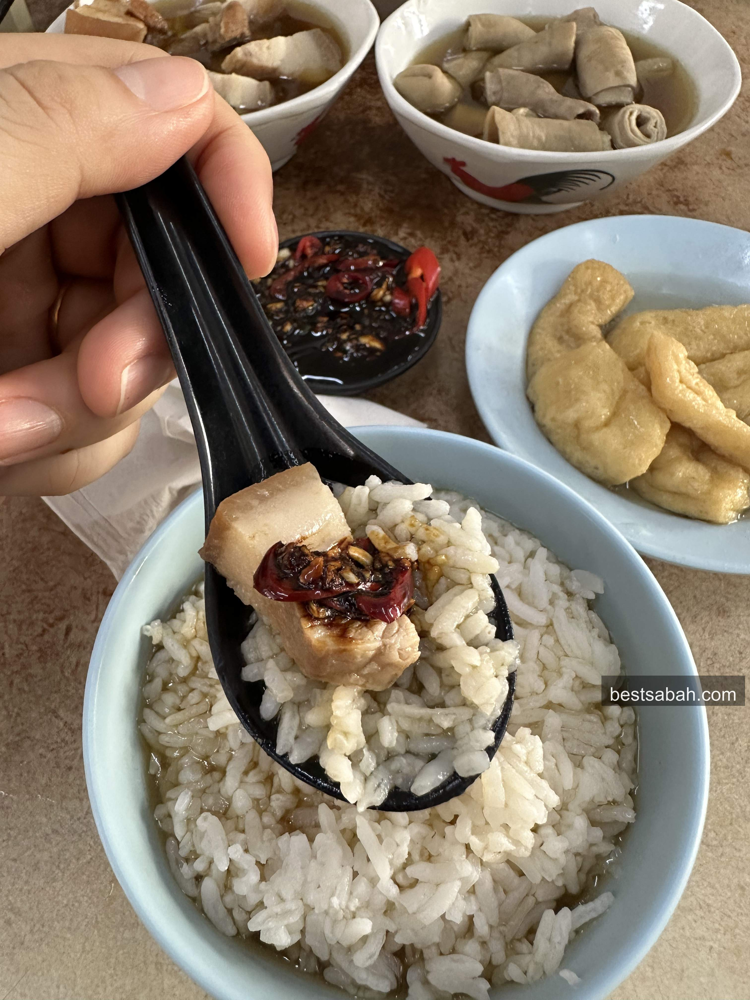
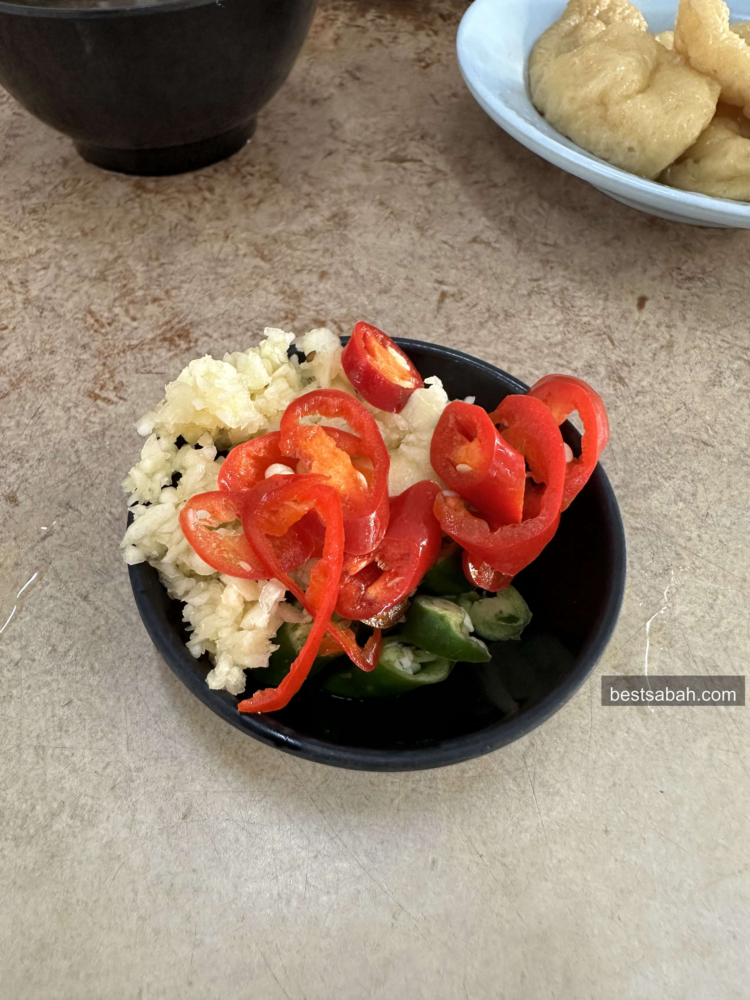
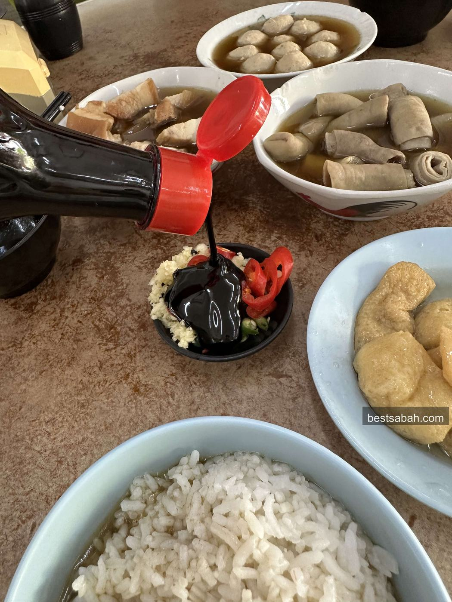
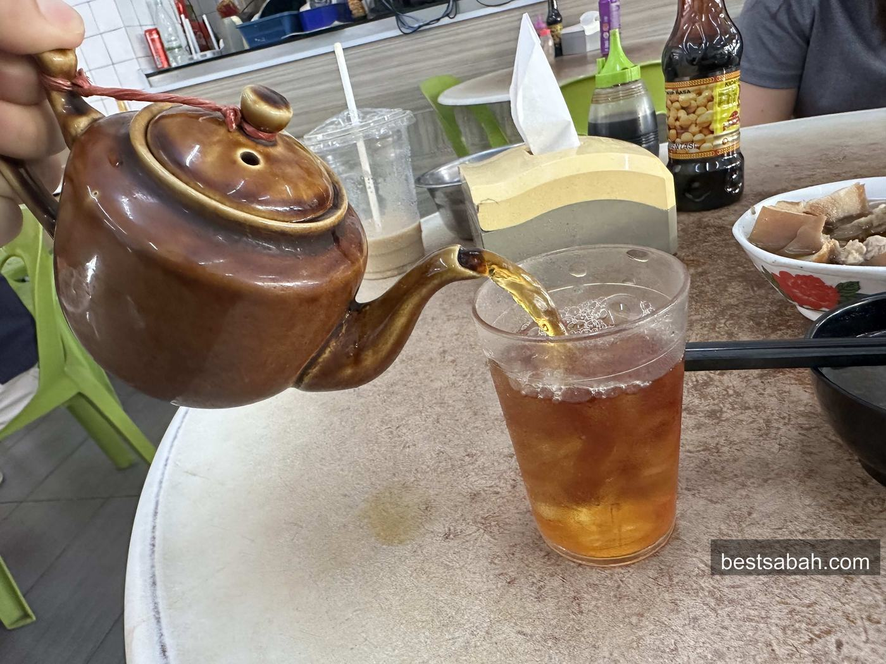
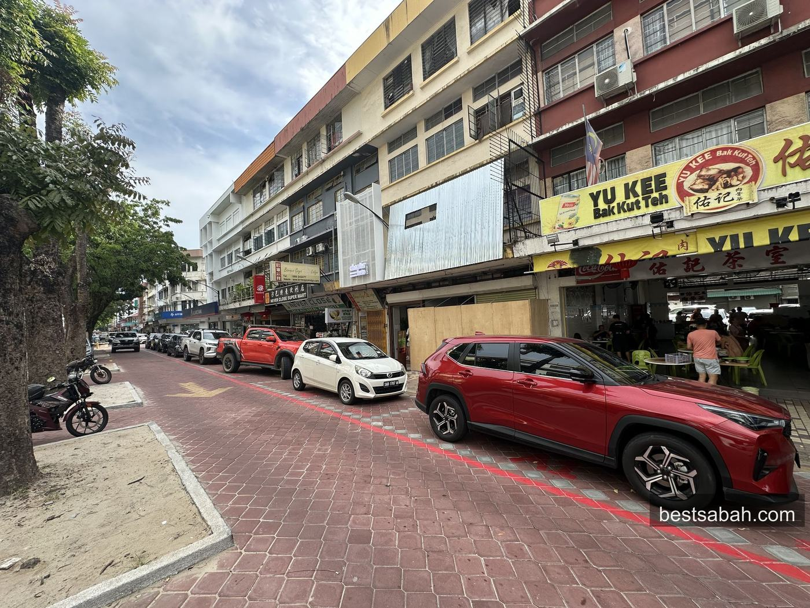
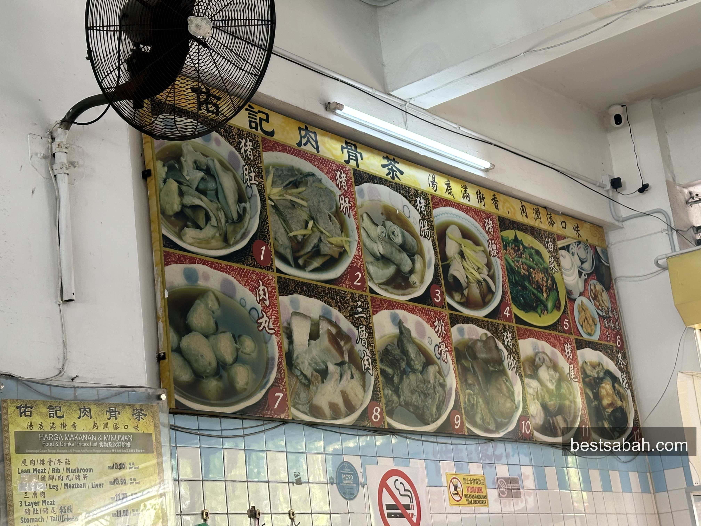

June 2026
The Best Bak Kut Teh in Kota Kinabalu: Yu Kee, Jalan Gaya
Deep herbal broth, fall-off-the-bone pork, free soup top-up. Yu Kee on Jalan Gaya has been the answer to KK's bak kut teh question for a long time.

Right on Jalan Gaya. Hard to miss from the street.
Ok, best bak kut teh in KK. Every local has a different answer. Ask ten people, get ten opinions. But if you are asking me? Yu Kee. Full stop.
Yes, it has gotten touristy lately. But there is a reason for that. As a local who genuinely loves bak kut teh, I keep coming back to this place because they are doing everything right.
Bak kut teh comes down to two things: the soup and the tenderness of the meat. Yu Kee has both nailed. The broth is deep, herbal, slightly peppery. The meat falls off the bone. That is really all you need.
Located right on Gaya Street, one of KK's most iconic roads, Yu Kee is hard to miss and even harder to forget.
What is Bak Kut Teh
For the uninitiated, bak kut teh is a Chinese pork rib soup. The name literally means "meat bone tea." The broth is slow-cooked with pork bones, garlic, and a blend of herbs and spices. You get a deep, slightly peppery soup with tender pork, served with rice and Chinese tea on the side.
Yu Kee does the soup version only. No dry style here. Just a clean, rich, herby broth that hits different when you are sitting outside on Jalan Gaya in the afternoon.
The Spread

You order by the bowl. Each cut comes separate. One visit looked like this:
- One bowl of intestine
- One bowl of pork belly
- One bowl of meatballs
- One small plate of yau char kwai and tofu pok
- White rice
- Small pot of Chinese tea
Total came to RM36.50 for one person. Fills you up properly.

The pork belly. Dip it in sweet soy before eating.
The pork belly is the standout. Soft, fatty, falls apart in the soup. Dip it in the sweet soy sauce before eating. Every regular does this automatically.

Bouncy and full of broth.
The meatballs are bouncy and soak up the broth well. Good contrast against the softer cuts.

Get a bit of everything in one spoonful.
Get a bit of everything in one spoonful. That is the play.
The Broth
Yu Kee's broth leans herbal and peppery. Not the pale Klang-style, not the super dark soy-heavy version. It sits in the middle, aromatic and warm, with a depth that builds as you eat.
Ask for a top-up and they will refill your soup. Keep going.
The Condiments

Self-service near the entrance. Take what you want.
Condiments are self-service. Head to the station near the entrance and grab what you want: chopped chilli padi, big chilli, sliced garlic, and dark sweet soy sauce.

Do not skip this step.
Do not skip the sweet soy. Dip your pork belly in it. This is non-negotiable.
Chinese Tea

Comes with the meal. Drink it throughout.
Chinese tea comes with the meal. It cuts through the richness of the broth and the fatty pork. Drink it throughout, not just at the end.
The Place

Right on the main stretch. Near the Sunday market area.
Yu Kee is an outdoor setup on Jalan Gaya. Open air, street-facing, classic old KK shophouse energy. Nothing fancy. Plastic chairs, loud tables, the smell of soup hitting you from the street.
Easy to find. Right on the main stretch of Jalan Gaya, near the Sunday market area.

Pick your cuts, pick your portion.
The menu is straightforward. Pick your cuts, pick your portion. Most people just point and order.
Also a good spot to plan around if you are in town for a Mount Kinabalu climb. Opens at 2:15pm so the timing works if you are getting back to the city in the afternoon.
Practical Info
Address: 74, Jalan Gaya, Pusat Bandar Kota Kinabalu, 88000 Kota Kinabalu, Sabah
Hours: Daily 2:15pm to 10pm
Price: Around RM20 to RM40 per person
Payment: Cash or QR bank transfer
Reservations: Not accepted
Seating: Outdoor
Look, I know not every local will agree with me on this. That is fine. BKT opinions run deep.
But I will say this: when someone asks "which is the best bak kut teh in KK?" the name Yu Kee is going to pop into a lot of heads. Maybe not number one for everyone. But top three? Definitely.
Go try it and decide for yourself. Go hungry. Order more than you think you need.
And if you want another solid KK food recommendation, Yii Siang ngiu chap in Inanam is another local favourite worth making the trip for.